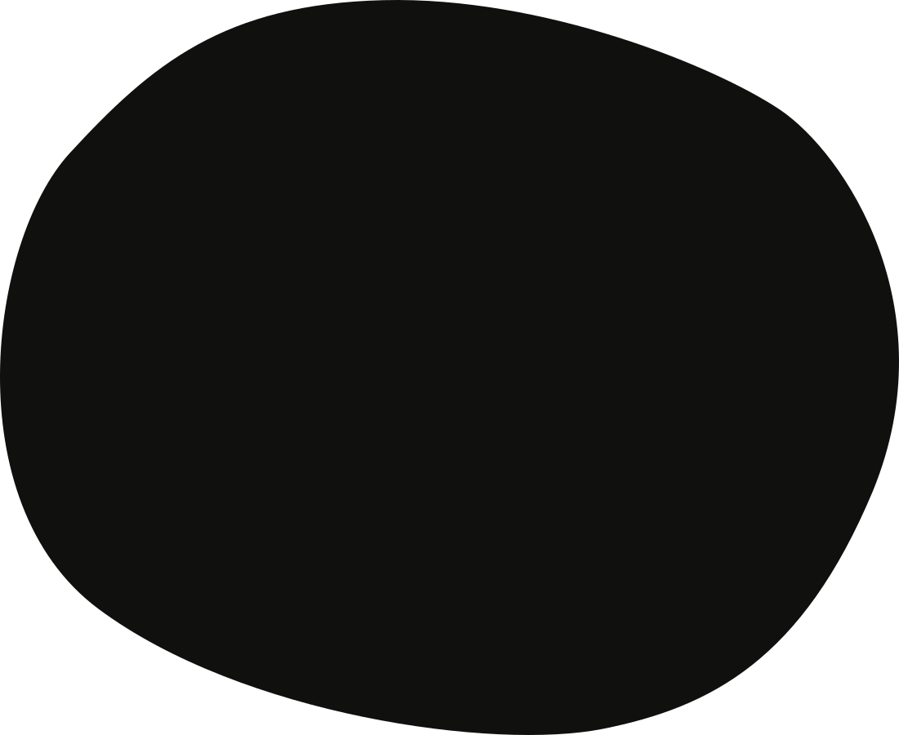

Hola, soy Juan
Ser humano, diseñador curioso y creador digital.
Un tipo de persona ingeniosa a la que le encanta investigar, idear y desarrollar soluciones.
He trabajado en diferentes campos, desde la programación hasta el diseño visual y de producto, pasando por la gestión de proyectos.
Apoyo proyectos combinando la investigación y la curiosidad sistémica con el instinto entrenado.
En primer lugar, puedo decir que soy un Humano...

Claro que no soy una medusa evolucionada ni una berenjena parlante, pero antes que nada... Soy un Humano con H mayúscula, o al menos intento serlo.
Ser un verdadero Humano exige el auto-descubrimiento como prioridad número uno en la vida, un camino que nos haga conscientes de nuestra luz y nos presente la oportunidad de abrazar nuestra oscuridad.
Soy un ser genuino, con capacidad de escucha honesta, amante de la vida. Feliz por naturaleza, curioso y hambriento de todo tipo de conocimientos.
La jardinería, la ilustración, la cocina /*y el comer*/ son mis pasiones. Encuentro inspiración en la vulnerabilidad, en la filosofía y la teosofía, en la geometría sagrada y en los simbolismos antropológicos.
Profesionalmente hablando, empecé mi carrera como desarrollador Back-end pero rápidamente encontré en el Front-end la posibilidad de crear impacto visual. Esa búsqueda me llevó a profundizar en el mundo audiovisual y en el Diseño de Producto.

Gracias a esta amplia perspectiva, alimento mi intuición y búsqueda de la belleza con matemática y lógica, soy detallista con una visión pixelada.
He desarrollado y diseñado soluciones empresariales, sitios web, videojuegos, herramientas y aplicaciones web para varias industrias. También he co-fundado 2 startups, he participado exitosamente en Start-Up Chile y su secuela Scale-Up, y he sido parte de la comunidad de Seedstars World en Latam y Suiza.
Y ahora, ¡la aventura llama!
En medio del extraño 2020, mi pareja y yo decidimos sacudir nuestras vidas y mudarnos desde el mismísimo Sur (Buenos Aires, Argentina) al mismísimo Norte (Tallin, Estonia).
En este nuevo contexto y uniendo fuerzas con un gran y viejo amigo, estoy de vuelta en el estudio, creando experiencias lúdicas y digitales.
Sama Sama está co-creando con codesters.club un programa de tutoría para +250 jóvenes de 7 escuelas secundarias de Estonia, a través del proceso de creación, diseño y desarrollo de productos digitales.
Paralelamente, sigo explorando y creando este Universo ilustrado que he llamado "Algo Particular", una herramienta para compartir mi punto de vista de la Vida y lo que significa para mí, estar Vivo.
Con personajes y situaciones muy sencillas, y la premisa hermética "Como es arriba, es abajo", intento contar mi verdad: todos somos iguales, todos somos uno, (no) somos (de) aquí.

Estemos en contacto
Si puedo apoyarte de alguna manera, ser útil para tu proyecto o simplemente quieres conocerme, no dudes en ponerte en contacto conmigo. Por favor, proporciona cualquier información que creas que puede ser útil.
Enviar mensaje